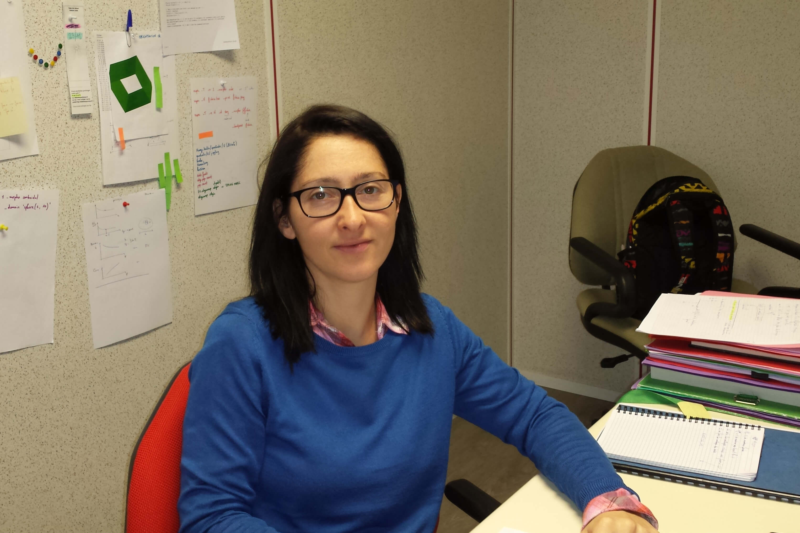

Working at
DeepLime
28 rue du Chemin Vert
75011, Paris
FRANCE
Papers
-
"Numerical modeling of disordered foam in 3D: effective
properties by homogenization",
C. Lusso and X. Chateau, 2017, Proceedings in 6th Biot conference
[HAL]
-
"Monodisperse disordered 3D open-cell foams. Elasticity, Thermal
conductivity and Permeability",
C. Lusso and X. Chateau, 2017, submitted.
-
"Explicit solutions to a free boundary model for the
static/flowing transition in granular flows",
C. Lusso, F. Bouchut, A. Ern, A. Mangeney, 2016, Disc. Cont. Dyn.
Syst., reviewed [HAL]
-
"Two-dimensional simulation of viscoplastic Drucker-Prager flows
by regularization, application to granular collapse",
C. Lusso, A. Ern, F. Bouchut, A. Mangeney, M. Farin and O. Roche,
2017, J. Comp. Phys. [DOI] [HAL]
-
"Geostrophic vs magnetostrophic adjustment and nonlinear
magneto-inertia-gravity waves in rotating shallow water
magnetohydrodynamics",
V. Zeitlin, C. Lusso and F. Bouchut, 2015, Geophys. Astrophys. Fluid
Dynamics [DOI]
-
"A free interface model for static/flowing dynamics in thin-layer
flows of granular materials with yield: simple shear simulations
and comparison with experiments",
C. Lusso, F. Bouchut, A. Ern and A. Mangeney, 2014, Appl. Sci. [DOI] [HAL]
Conferences/Talks
-
"Two-dimensional simulation of viscoplastic Drucker-Prager flows
by regularization, application to granular collapse",
LRC Manon (Jussieu, 31 mars 2015) [Abstract][Slides]
-
Numerical Fluid Mechanics , Henri Poincaré Institute
- Paris, 2015 - Poster
-
"Thin layer model for gravity flows with fluid/solid transition",
National Congress of Numerical Analysis - Superbesse (France), 2012
-
Numerical approximations of hyperbolic systems with source terms
and applications , Roscoff (France), 2011 - Poster
PhD thesis
-
"Numerical modeling of gravitational viscoplastic flows with
fluid/solid transition",
C. Lusso, 2013, CERMICS-ENPC [PDF].
Teaching
-
2020/2021:
-
Stats1/Maths1 - Licence Economie Gestion Université Paris 2.
-
2012/2013:
-
2011/2012:
-
Introduction au Calcul Scientifique - 2em année Ecole des
Mines ParisTech.
-
Linux/ Emacs/ Scilab/
LATEX
- 1ère année Ecole des Ponts ParisTech.
-
Calcul Vectoriel - L1 Maths-Informatique Université Paris
6.
-
Algèbre 1 - L1 Sciences Physiques & Sciences pour
l'ingénieur Université Paris-Est Marne la
vallée
-
Algèbre 2 - L2 Sciences Physiques Université
Paris-Est Marne la vallée
-
2010/2011:
-
Analyse numérique et Optimisation - 3em année
ESIEE Engineerings.